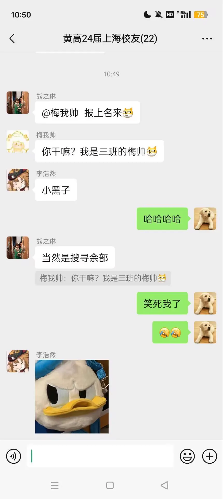

Journal · 2024-09-15
湖北省武汉市


洛阳亲友如相问， 一片冰心在玉壶！
柴江赣北 : 我被梅高薇同学冒充了…… 2024年9月15日 22:29
Should my kin in Luoyang ask after me — a heart of pure ice within a vase of jade!
柴江赣北 : I've been impersonated by our classmate Mei Gaowei... 2024年9月15日 22:29
Si parents et amis à Luoyang s'enquièrent de moi : un cœur de glace dans un vase de jade !
柴江赣北 : Je me suis fait usurper l'identité par Mei Gaowei... 2024年9月15日 22:29
Sollten Verwandte und Freunde in Luoyang nach mir fragen: ein Herz aus Eis in einer Jadevase!
柴江赣北 : Ich wurde von meiner Mitschülerin Mei Gaowei nachgeahmt … 2024年9月15日 22:29